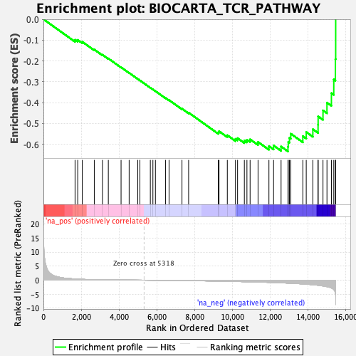
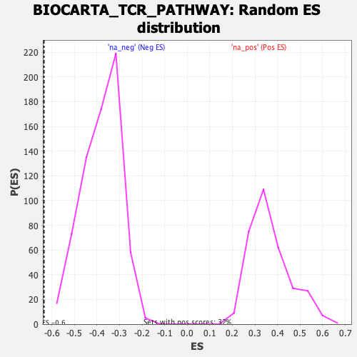

| | | Dataset | DE_genes |
| Phenotype | NoPhenotypeAvailable |
| Upregulated in class | na_neg |
| GeneSet | BIOCARTA_TCR_PATHWAY |
| Enrichment Score (ES) | -0.63458014 |
| Normalized Enrichment Score (NES) | -1.6684376 |
| Nominal p-value | 0.0 |
| FDR q-value | 0.12126966 |
| FWER p-Value | 0.13 |
Table: GSEA Results Summary

Fig 1: Enrichment plot: BIOCARTA_TCR_PATHWAY
Profile of the Running ES Score & Positions of GeneSet Members on the Rank Ordered List
| PROBE | GENE SYMBOL | GENE_TITLE | RANK IN GENE LIST | RANK METRIC SCORE | RUNNING ES | CORE ENRICHMENT | | 1 | VAV1 | | | 1674 | 0.444 | -0.0988 | No |
| 2 | NFKB1 | | | 1815 | 0.385 | -0.0994 | No |
| 3 | CD3E | | | 2058 | 0.309 | -0.1083 | No |
| 4 | NFKBIA | | | 2692 | 0.177 | -0.1454 | No |
| 5 | CALM1 | | | 3125 | 0.128 | -0.1706 | No |
| 6 | MAP3K1 | | | 3435 | 0.105 | -0.1883 | No |
| 7 | PIK3CG | | | 4110 | 0.064 | -0.2306 | No |
| 8 | CALM2 | | | 4537 | 0.039 | -0.2574 | No |
| 9 | CALM3 | | | 4992 | 0.016 | -0.2865 | No |
| 10 | RAC1 | | | 5105 | 0.011 | -0.2935 | No |
| 11 | GRB2 | | | 5659 | -0.018 | -0.3289 | No |
| 12 | RASA1 | | | 5795 | -0.026 | -0.3371 | No |
| 13 | CD247 | | | 5927 | -0.034 | -0.3448 | No |
| 14 | RELA | | | 6467 | -0.071 | -0.3782 | No |
| 15 | PRKCB | | | 6650 | -0.085 | -0.3882 | No |
| 16 | CD3G | | | 7334 | -0.139 | -0.4294 | No |
| 17 | PTPN7 | | | 7686 | -0.169 | -0.4484 | No |
| 18 | MAP2K1 | | | 9255 | -0.342 | -0.5425 | No |
| 19 | HRAS | | | 9295 | -0.347 | -0.5375 | No |
| 20 | PIK3CA | | | 9734 | -0.408 | -0.5569 | No |
| 21 | PPP3CA | | | 10165 | -0.473 | -0.5744 | No |
| 22 | SHC1 | | | 10277 | -0.488 | -0.5709 | No |
| 23 | MAP2K4 | | | 10636 | -0.543 | -0.5822 | No |
| 24 | PIK3R1 | | | 10773 | -0.563 | -0.5786 | No |
| 25 | PPP3CB | | | 10940 | -0.589 | -0.5765 | No |
| 26 | PRKCA | | | 11361 | -0.669 | -0.5890 | No |
| 27 | PPP3CC | | | 11937 | -0.792 | -0.6089 | No |
| 28 | ZAP70 | | | 12183 | -0.852 | -0.6061 | No |
| 29 | CD3D | | | 12580 | -0.948 | -0.6110 | No |
| 30 | MAPK3 | | | 12945 | -1.060 | -0.6113 | Yes |
| 31 | FYN | | | 12960 | -1.064 | -0.5889 | Yes |
| 32 | ELK1 | | | 13022 | -1.083 | -0.5691 | Yes |
| 33 | NFATC1 | | | 13093 | -1.104 | -0.5494 | Yes |
| 34 | LCK | | | 13732 | -1.349 | -0.5612 | Yes |
| 35 | LAT | | | 13912 | -1.429 | -0.5414 | Yes |
| 36 | MAPK8 | | | 14262 | -1.636 | -0.5281 | Yes |
| 37 | NFATC3 | | | 14538 | -1.819 | -0.5061 | Yes |
| 38 | SOS1 | | | 14542 | -1.821 | -0.4663 | Yes |
| 39 | PLCG1 | | | 14799 | -2.062 | -0.4377 | Yes |
| 40 | NFATC2 | | | 15009 | -2.319 | -0.4003 | Yes |
| 41 | NFATC4 | | | 15244 | -2.762 | -0.3549 | Yes |
| 42 | RAF1 | | | 15370 | -3.364 | -0.2892 | Yes |
| 43 | JUN | | | 15456 | -4.705 | -0.1915 | Yes |
| 44 | FOS | | | 15471 | -8.771 | -0.0000 | Yes |
Table: GSEA details [plain text format]

Fig 2: BIOCARTA_TCR_PATHWAY: Random ES distribution
Gene set null distribution of ES for BIOCARTA_TCR_PATHWAY